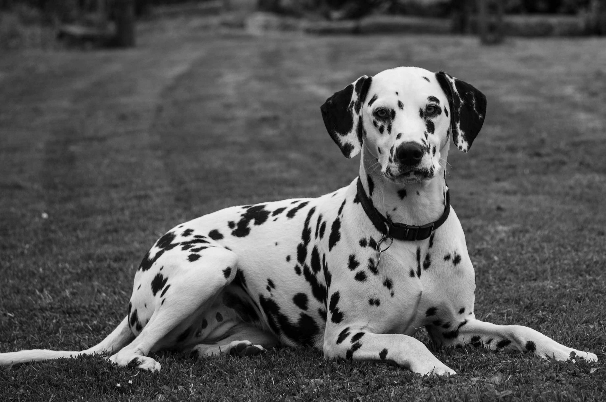

Título de Perros.
Aquí tenemos una tabla sobre perros.
Tipos de perro
Número
Raza
Colores principales
Foto
Wikipedia
1
Pastor Alemán
Negro y Marrón
PRESIONA AQUÍ
2
Dálmata
Blanco y Negro

PRESIONA AQUÍ
3
Pomerania
Amarillo/Naranja
PRESIONA AQUÍ